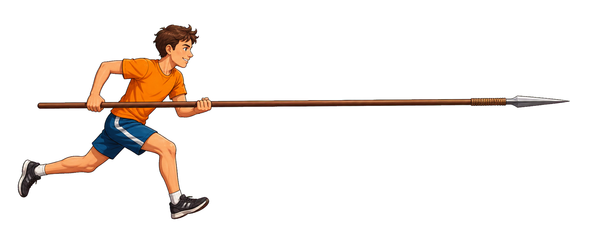

Contracción
L = L₀/γ
Solo se contraen longitudes medidas en la dirección del movimiento.
Relatividad especial · contracción de longitudes
En el marco del granero la lanza puede contraerse. En el marco del corredor, el que se contrae es el granero. La clave está en la relatividad de la simultaneidad.

Solo se contraen longitudes medidas en la dirección del movimiento.
“Cerrar dos puertas a la vez” no significa lo mismo en todos los marcos.
No hay contradicción: cada marco usa sus propias medidas coherentes de longitud y tiempo.